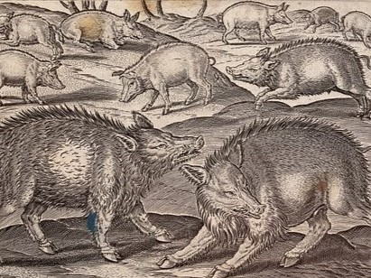

Welcome to Pig Parish!
The digital sanctuary where porcine enthusiasts can indulge in a plethora
of captivating pig-related content. This esteemed website stands as a
harmonious amalgamation of a blog and a news outlet, catering to those
who hold a deep admiration for these delightful creatures. With each visit,
one is greeted by a cornucopia of articles, anecdotes, and updates pertaining
to the world of pigs. From heartwarming tales of porcine heroism to informative
pieces on pig care and husbandry, Pig Parish leaves no stone unturned in
its quest to satiate the insatiable appetite for all things pig.
Generated by MEE6 AI
PIGS EAT ANYTHING!
Many are aware of how mafia in films dispose of their victims bodies,
but what about the more realistic alternatives? Pigs are known to eat
everything and anything avaliable to them, but did you know that that
also includes human bodies?
Dedicated to Sander Ramsdal Lindquist

Four-legged protector
A local wolfhound has emerged as the valiant protector of a humble herd
of pigs. This noble creature, with a coat as black as the darkest night,
has taken upon itself the solemn duty of safeguarding these swine from
any harm that may befall them.
Generated by MEE6 AI

PIGS AND TACO?
While regaling the villagers with tales of his taco thievery.
And so, the legend of Sir Oinkington and his insatiable love
for tacos lived on, reminding us all that even pigs can have
a taste for the finer things in life.
ORN
Generated by MEE6 AI